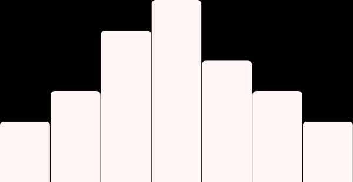

Summary: Uncover the relationship between 3 common vitamin deficiencies and the increasing presence of Hashimoto's Thyroiditis.
Classification: Micro-Analysis
Methodologies: Regression, Correlation
Topic(s): Health
Edited: November 19th, 2025
Summary: It is general knowledge that the overall health and empowerment of women can have various connections with the social climate and progression within different communities and regions. In this study, these various connections are examined through a series of advanced statistical models with special emphasis on Multivariate Regression Analysis, which is used to measure the relationship between several quantitative response variables, as well as multiple predictors. Other techniques included in this study are Time Series, Multiple Regression, and The Genetic Algorithm for model selection. These methods will be applied to explore the relationships between nine women empowerment indicators and 37 measurements of different aspects of Kenyan society. Time in years will also be considered to account for the time series component, resulting in 38 total predictors. To reduce multi-collinearity within the predictors of the data set, five different models are created from a subset of the predictors in categories of economics, politics, health, education, and technology.
Classification: Full-Length Project
Methodologies: Multivariate Regression, Machine Learning, Time Series
Topic(s): Health, Education, Politics, Social Issues
Edited: November 19th, 2025